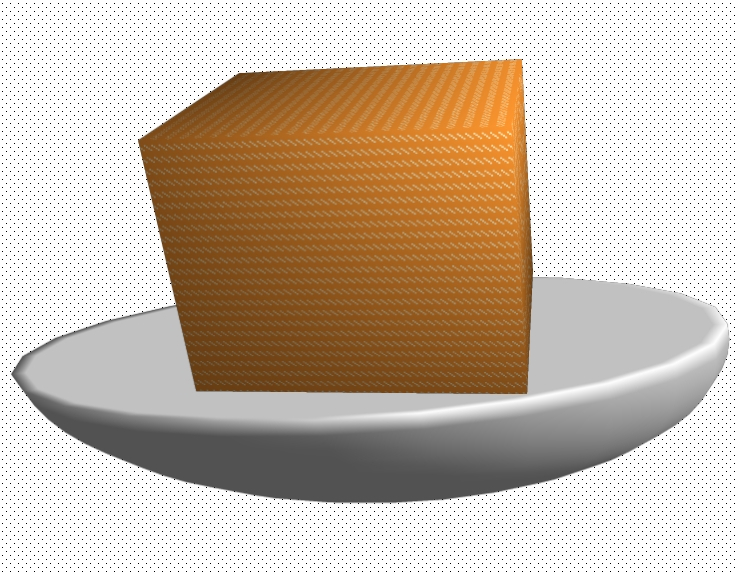

Home
Lasagna

Description
This is a custom-made lasagna made entirely of FOSS.
It may not look appetizing, but I promise you that it is delicious.
Ingredients
- 16 oz lasagna noodles
- 2 eggs
- 32 oz ricotta cheese
- Chives, if you like
- Pasta sauce
- 16 oz mozzerella cheese, shredded
- 4 oz parmesean cheese, grated
Steps
- Preheat oven to 350F
- Boil noodles in a pot of water
- Meanwhile, mix ricotta, chives, and salt and pepper to taste
- Drain and rinse noodles in a strainer
- Grease a lasagna pan (13x9 will do)
- Spread a thin layer of pasta sauce on the bottom of the pan
- Top with a layer of lasagna noodles
- Spread 1/3 of the ricotta mixture
- Add 4 oz mozzerella, 1 oz parmesean
- Add a layer of pasta sauce on top
- Repeat steps 7-10 2 more times
- Top last layer of pasta with pasta sauce, then the remaining cheese
- Cover with aluminum foil, and bake for 30 minutes
- Uncover, and bake for 25-30 more
- Remove from oven, let cool for a few minutes, and enjoy!
Home